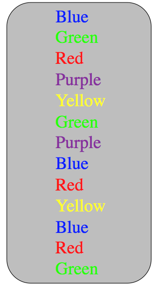
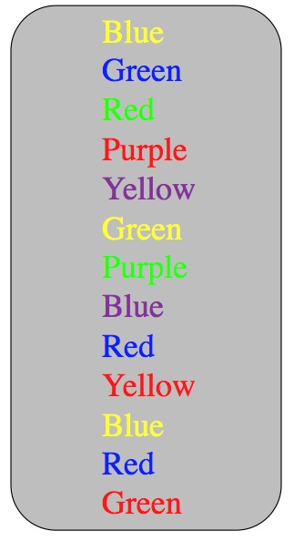

Week 6 lecture notes - PSYC 3435
Any experimental design comes down to knowing two things:
- dependent variables: what is measured
- independent variables: what is manipulated
Dependent variables
Need to consider the following:
- how things are measured (scale of measurement)
- whether measure is valid
- whether measure is reliable
Scales of measurement
- nominal: non-ordered, categorical responses (e.g., gender, college major)
- ordinal: ordered, categorical responses (e.g., level of anxiety, rating how "often" something occurs)
- interval: numerical responses with no meaningful "0" (e.g., Likert scales)
- ratio: numerical responses with a "0" (so ratios make sense) (e.g., RT, temperature)
- Note – type of scale determines statistical test that can be used!
Validity - how accurate is your measurement?
- usually an issue with surveys
- construct validity - extent to which survey measures what is intended to
- face validity - on the surface, survey appears to be a good measure
Reliability - how consistent is your measurement
- test-retest reliability - extent to which survey gives same score over different administrations
- interrater reliability - extent to which different observers rate behaviors the same
Independent variables
Three main ways an IV can be manipulated:
- Presence/absence - a treatment is either present or absent (2 levels)
- Type - each level of IV involves a different type of treatment (e.g., type of instruction on a test)
- Amount - each level varies the amount of something (e.g., drug dosage)
Internal validity and bias
Recall that internal validity refers to the extent to which an experiment provides inference for causation. Let's look at one example of a study with LOW internal validity:
class demo: a "test of attentional focus"
- divide room into two groups (male and female is best)
- Females given Stroop task with no interference…measure time

- Males given Stroop task with interference…measure time

- Who wins? Does that mean males/females have better attentional focus?

Confounds
The problem with our inference in this experiment is that one variable (color/word interference) is perfectly correlated with another (gender). This is called a confound, and it is a threat to internal validity.
The goal in experimental design is to minimize confounds.
Types of confounds (and solutions):
- Group differences (solution: use random assignment)
- Order/testing effects (solution: use counterbalancing)
- experimenter bias (solution: use blinding)